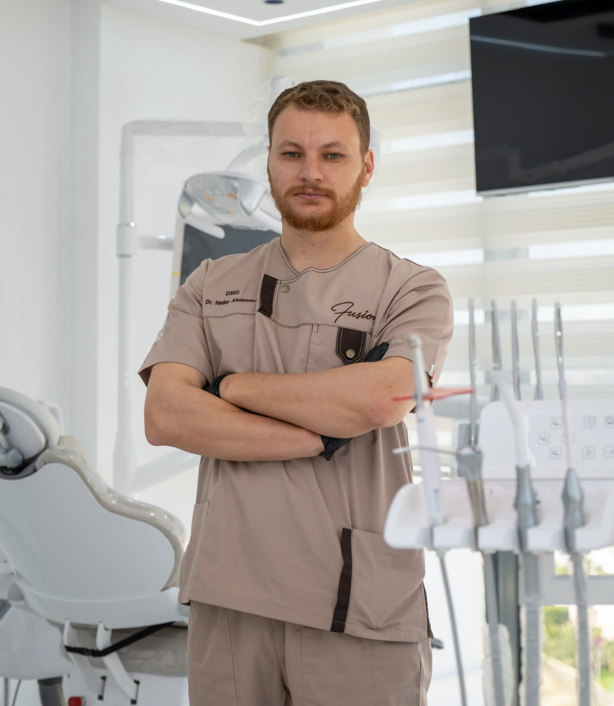
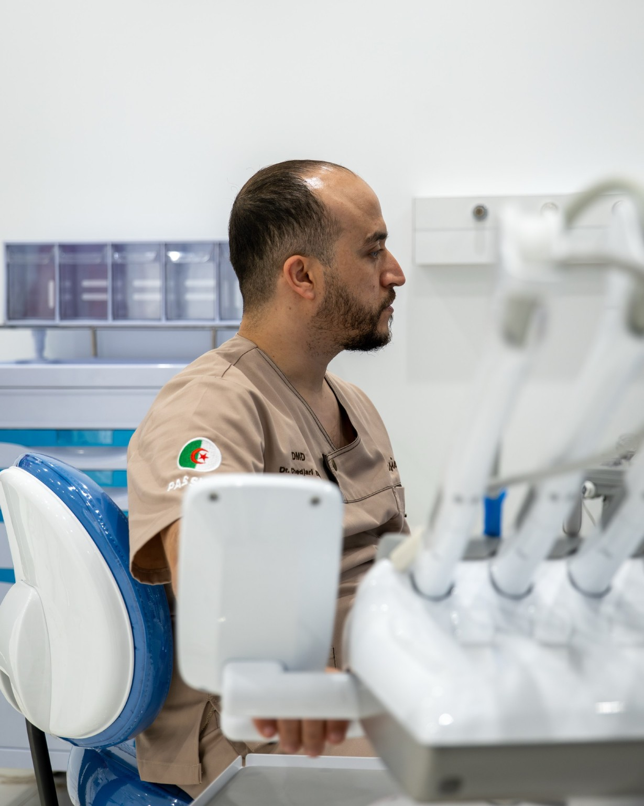
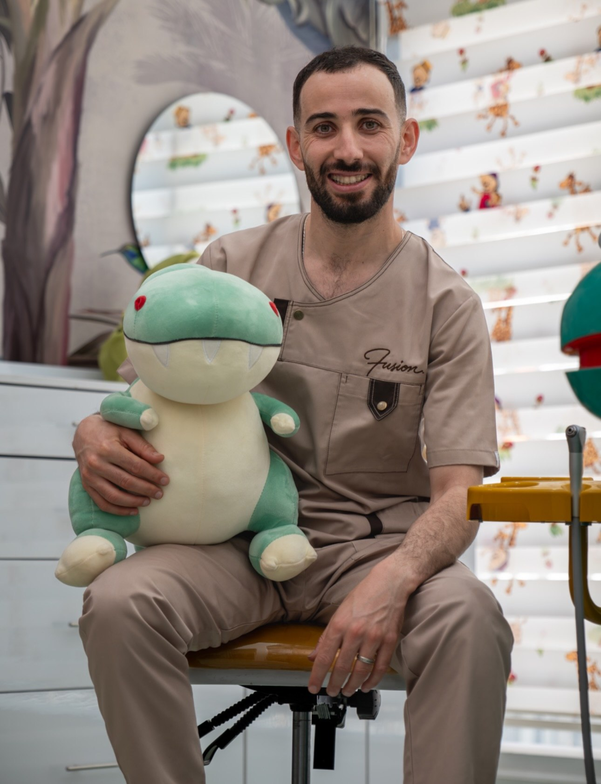
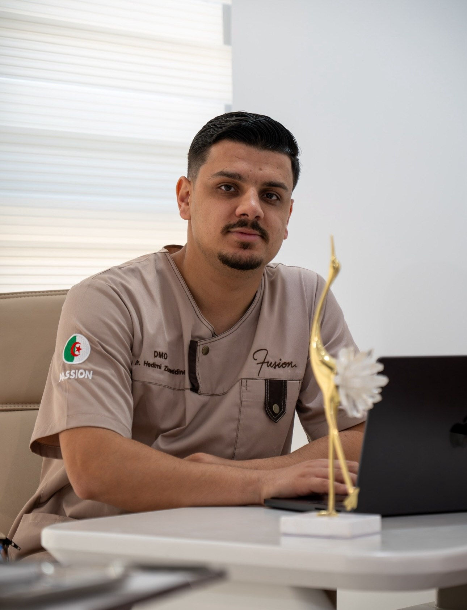

FUSION DENTAL CLINIC · BABA HASSEN · ALGER
Le soin,
autrement.
Quatre dentistes, des expertises complémentaires et une même vision : créer une expérience de soin précise, confortable et profondément humaine.
Entrer dans Fusion
01 · L'équipeQuatre expertises complémentaires
02 · Le lieuUn environnement pensé pour le patient
03 · Le soinPrécision, confort et attention
Une vision commune
Plus qu'un cabinet.
Une manière de prendre soin.
Fusion est née d'une histoire d'amitié, de confiance et d'une même vision du soin. Ensemble, quatre dentistes ont choisi d'unir leurs expertises pour créer un lieu où les disciplines se rencontrent et se complètent.
 L'espace · Fusion
L'espace · Fusion L'accueil
L'accueil Le confort
Le confortUne expérience pensée dans les détails
Lumière.
Confort.
Attention.
Fusion a été imaginée autour de la lumière, du confort, de l'élégance et de l'attention portée aux détails — pour créer une atmosphère qui s'éloigne du cadre clinique traditionnel.
L'équipe Fusion
Des expertises qui
se complètent.



L'expérience patient
Ce que l'on
retient de Fusion.
★★★★★
“Excellent professionalism and very warm welcome. Highly recommended.”
Nesrine Ould Hocine · avis partagé sur Google★★★★★
“The staff at the clinic are very polite and welcoming.”
Dounia Oubraham · avis partagé sur GoogleLa prochaine étape